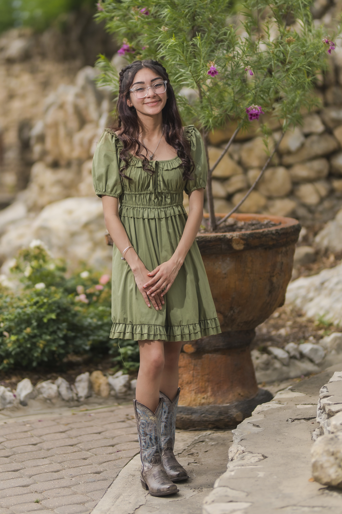

A LITTLE INTRODUCTION
The person behind
the pixels.

THIS IS ME ✳Hi, I’m Michelynne Lopez.
I'm a Digital Media student with a passion for video editing, photography, and graphic design. I'm currently seeking an internship and freelance opportunities where I can continue building my portfolio, gain hands-on experience, and contribute creative solutions to real-world projects.
My interest in digital media began because I was fascinated by the way movies, television shows, and online videos use editing, motion graphics, visual effects, and design to capture an audience's attention. I wanted to learn how those videos were created and develop the skills to produce engaging content of my own.
I first discovered video editing in 2019, when small edits using Video Star became popular on Instagram. I enjoyed creating short videos that synchronized transitions and effects to the beat of the music, which sparked my interest in editing. That passion continued to grow in 2023 when I enrolled in an Audio Visual Production class in high school. There, I was introduced to Adobe Premiere Pro and completed several editing projects using professional workflows. One of my favorite projects was editing a wedding video that combined footage from before, during, and after the ceremony with music and the couple's vows to create a meaningful story. That experience confirmed that I wanted to pursue a career in digital media and video editing.
My Creative Approach
I believe every successful video begins with a strong hook that captures the viewer's attention. Whether it's an emotional opening, an unexpected moment, or a visually engaging sequence, the first few seconds set the tone for the rest of the story.